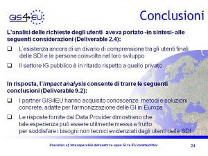
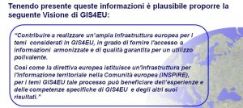
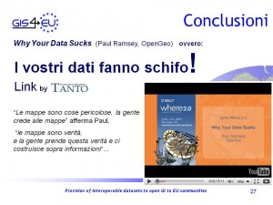
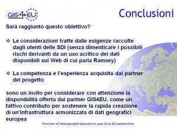
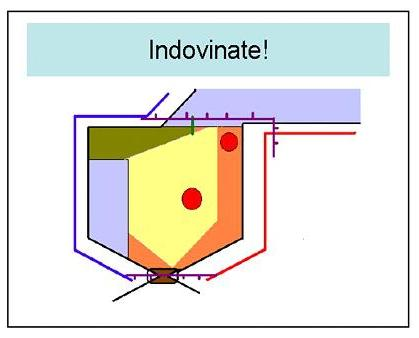
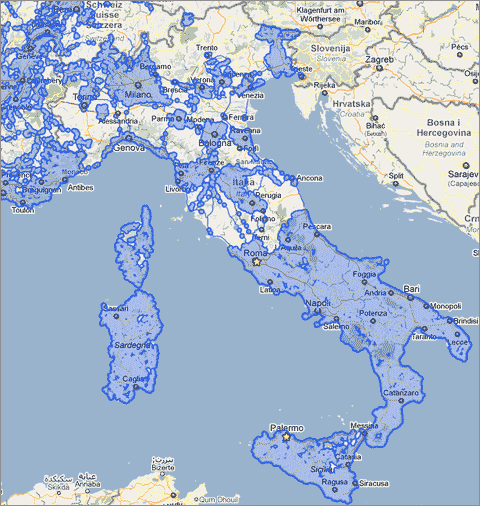

20 maggio, 2010 | di Andrea Borruso
Vittorio Paola mi ha segnalato questo evento che si terrà a Cork il 21 ed il 22 Giugno, e con piacere rigiro la cosa qui. Questi i temi:
Environmental data and applications have some peculiar features that make them distinct from the typical application in applied computer science. During recent years, this has led to the emergence of Environmental Informatics or Enviromatics (Environmental Information and Decision Support Systems). This is a novel field of Applied Informatics which is concerned with the application of computer science techniques to environmental problems. The same methodological and conceptual framework is shared by Computational Sustainability: “an interdisciplinary field that aims to apply techniques from computer science, information science, operations research, applied mathematics, and statistics for balancing environmental, economic, and societal needs for sustainable development”. The ultimate aim of these new and evolving areas of modern research is to develop computational and mathematical models to support decision making in challenging real world problems denoted by the often misused or vaguely defined concept of “sustainability”.
The colloquium will provide cutting-edge data analysis and modeling tools for a variety of practical applications by presenting concepts, algorithms, and case studies related to environmental problems. Attendees can expect a series of presentations on spatio-temporal data organization, analysis, modelling.
The colloquium will be useful for beginning users as well as advanced researchers.
Trovate qui tutti i dettagli:
http://www.4c.ucc.ie/colloquium2010/
Posted in News | No Comments »
4 maggio, 2010 | di Andrea Borruso
Questa è una piccola grande notizia che apprendo grazie @lucamenini : il Ministero dell’Ambiente e della Tutela del Territorio e del Mare, ha autorizzato (il 30 Aprile scorso) a “ricalcare le foto aeree tramite l’accesso al WMS del PCN“.
Sarà possibile arricchire la base dati di OpenStreetMap, tracciando punti, linee, e poligoni su delle basi di buona qualità e finalmente omogenee per il territorio nazionale. Molti dei client con i quali è possibile modificare i dati di OSM, consentono infatti di aggiungere layer WMS come base per il ricalco.
Questo il link da usare in JOSM per la sorgente WMS delle ortofoto del 2006:
http://wms.pcn.minambiente.it/cgi-bin/mapserv.exe?map=/ms_ogc/service/ortofoto_colore_06.map&LAYERS=
ortofoto_colore&REQUEST=GetMap&VERSION=1.1.1&FORMAT=image%2Fpng&
Questo per quella del 2008 (soltanto Umbria e Lazio)
http://wms.pcn.minambiente.it/cgi-bin/mapserv.exe?map=/ms_ogc/service/ortofoto_colore_08.map&LAYERS=
ortofoto_colore&REQUEST=GetMap&VERSION=1.1.1&FORMAT=image%2Fpng&
Ringrazio coloro i quali si sono battuti per questo risultato, ed in particolare Simone Cortesi di OpenStreetMap Foundation, e ovviamente anche il PCN.
Simone ha inoltre lanciato una proposta di virtual mapping party di ritracciatura durante la settimana delle libertà digitali: http://www.libertadigitali.org/
Sono molto contento di questa notizia e chiedo a tutti i lettori interessati di darne ampia eco. Grazie in anticipo!!
Posted in News | 6 Comments »
3 maggio, 2010 | di Sergio Farruggia
“I vostri dati fanno schifo” di Pietro Blu Giandonato è caduto a fagiolo proprio mentre stavo riflettendo su come concludere il mio intervento inserito in scaletta al convegno ”La condivisione dei dati geografici in Europa”. Troverete tutte le informazioni riguardanti questa iniziativa sul sito istituzionale del progetto GIS4EU, qui. Da questo indirizzo si può inoltre accedere ai documenti riguardanti l’attività svolta.
Ipotizzo che il lettore interessato sia andato a dare una sbirciatina sul sito ed abbia letto di cosa si è occupato questo progetto. Per i più pigri traduco così: “Proviamo a vedere cosa significa e cosa comporta applicare le regole della direttiva INSPIRE ai dataset esistenti”.
Ciò premesso, posso entrare nel merito dell’argomento che mi era stato affidato, cioè la prospettiva degli utenti sulle SDI: dall’analisi delle esigenze all’utilizzo dei risultati.
In sintesi, si è trattato di esporre i risultati di due analisi effettuate nel corso del progetto. La prima ha riguardato l’individuazione dei bisogni degli utenti di un’Infrastruttura di Dati Territoriali, lavoro svolto nella fase iniziale del progetto. La seconda indagine ha inteso raccogliere informazioni relative all’impatto dei risultati del progetto, coinvolgendo i partner con un ruolo di produttori e fornitori di geodati, ovvero gestori di una SDI.
Ho riassunto l’esito di queste indagini nella slide riportata qui a fianco. Per quanto riguarda i bisogni degli utenti di una SDI, oltre alle esigenze di carattere tecnico (requisiti di standardizzazione e armonizzazione dei dati nonché indicazioni per migliorare i servizi di fruizione dei dati stessi) sono emerse esigenze non tecniche, come il miglioramento delle modalità di comunicazione e di dialogo tra data provider e utenti, la riduzione dei vincoli per l’accesso ai dati, il miglioramento della gestione dei metadati, l’aggiornamento più frequente dei dati, politiche di accesso (licenze e prezzi) ai dati minori (in numero) e più chiare. E’ stata anche indicata la necessità di debellare il digital divide esistente all’interno delle pubbliche amministrazioni tra addetti ai lavori e chi ha ruoli di decision maker. Risultato in qualche modo scontato: i limiti segnalati contribuiscono a penalizzare i contenuti di origine pubblica ed il loro impiego per tante applicazioni consumer, ma non solo.
Meno prevedibile il risultato della valutazione che i data provider coinvolti in GIS4EU hanno espresso nei confronti dell’esperienza sviluppata e dei risultati conseguiti. In generale, la metodologia individuata per rendere fruibili i propri dataset secondo le regole INSPIRE è ritenuta adeguata allo scopo. Sussistono sicuramente problematiche legate ai costi della sua applicazione, in particolare, costi da sostenere per la formazione del personale (ad es. per fare propria la complessa documentazione tecnica e mantenersi aggiornati) e per adeguamenti organizzativi: ma è anche ragionevole supporre che questi decresceranno nel tempo, potendo anche immaginare una sempre maggiore diffusione, assimilazione e condivisione delle conoscenze essenziali nel mondo della geomatica. E’ stato certamente incoraggiante –rispetto al punto di vista degli utenti- rilevare che il processo GIS4EU è ritenuto utile per favorire la fruibilità dei dati, soprattutto grazie al miglioramento della compatibilità tra dataset, alla disponibilità di data model ed al salto di qualità nella possibilità di condividere fonti di origine differente. I tecnici interpellati, sollecitati a fornire indicazioni sugli effetti dell’esperienza acquisita secondo diversi aspetti (rispetto alle ricadute operative per le organizzazioni, al valore sociale, a quello strategico e politico), hanno comunque sempre rimarcato –tra i diversi motivi di miglioramento indotti da GIS4EU- la capacità di comunicazione e l’adozione di modalità di collaborazione in rete.
In conclusione: i risultati di GIS4EU possono concorre a soddisfare i bisogni degli utenti delle SDI. Quindi, come evitare che questo risultato si dissolva, come valorizzare l’esperienza acquisita?
E’ stato chiesto ai Data Provider di esprimersi anche riguardo ad una disponibilità per assistere eventuali SDI interessate ad applicare il processo GIS4EU ai propri dataset. L’esito è stato tradotto in termini di “visione”, utile per orientare le persone coinvolte e per comunicare questo proposito anche a progetto terminato.
L’obiettivo dei partner è quello di “Supportare la più attiva ed efficiente cooperazione tra i fornitori di geodataset, gli enti cartografici e altri gestori di dati geografici, nonché per offrire proposte e fornire piani per sostenere la rapida creazione di un’infrastruttura armonizzata di dati geografici europea”.
Ma sarà raggiunto questo obiettivo? Certamente i dati e l’informazione geografica sono di grande interesse, nei più diversi campi, e i produttori di dati sono un riferimento indispensabile per tanti operatori … e sulla Rete si trovano tanti dati … ma… Ecco, qui Pietro Blu mi è venuto in aiuto: segnala l’avvertimento di Paul Ramsey di OpenGeo recentemente lanciato al congresso Where2.0.
Già, crediamo alle mappe e spesso le prendiamo come oro colato. Attraverso di esse produciamo altre informazioni, senza prendere alcuna precauzione. La conclusione di Ramsey è perentoria: “Produttori di dati controllate se e perché i vostri dati ‘fanno schifo’ e ditelo ai vostri utenti”.
L’impegno profuso durante questo biennio da tanti esperti GI, di SDI nazionali, regionali e locali, di diverse nazioni europee può essere raccolto per affermare: “I nostri dati saranno affidabili!”.
Perché prima dell’avvento del computer, il mercato “mapping” aveva caratteristiche affatto differenti ed al prodotto cartaceo si poteva anche perdonare d’invecchiare per anni prima di essere sostituito da una nuova edizione. Non è più così. Ma il mutamento del contesto comporta anche nuovi problemi: Ramsey dixit! Soprattutto: nessun ente cartografico o sistema informativo geografico può ormai lavorare da solo!
Per il settore pubblico questa è un’opportunità da cogliere al volo. Quanto ho imparato partecipando a questo progetto e quanto ho ascoltato dai relatori dell’incontro genovese va proprio nella direzione che segnalavo di ritorno dalla Global SDI Conference di Rotterdam, l’anno passato: “Le SDI nascono e stanno crescendo più rapidamente, armoniosamente ed hanno maggior successo -cioè soddisfano i bisogni degli utenti (e sono loro a dichiararlo!)- dove è maggiore l’attitudine alla collaborazione, la cooperazione tra istituzioni”.
Non si può, non si deve interrompere la strada intrapresa.
Un cammino che dovrà essere percorso insieme: da soggetti pubblici, privati, del mondo della ricerca, come GIS4EU ha dimostrato. Valorizzando le comunità e le aggregazioni di singoli, come stiamo imparando nel word wide web.
D’altro canto –mi son chiesto- perché il direttore di OSGeo si è scatenato con un intervento “a gamba tesa” nell’arena più eterodossa ma anche più creativa della comunità IG internazionale?
Posso sbagliarmi, ma credo che ci sia lo zampino di questa norma: Open Government Directive (OGD, 12/2009). Le parole d’ordine su cui si basa sono: trasparenza, partecipazione e collaborazione (anche in Italia s’inizia a parlarne: a me, per esempio, è piaciuto questo). Mi pare che la “provocazione” di Paul voglia andare a parare lì, come dire: “Il futuro è l’OGD ed io ho la soluzione per aiutarvi ad implementare i suoi principi”. Leggo appunto, visitando il sito di OpenGeo, che propongono una soluzione per aiutare l’implementazione di questi tre principi: “OpenGeo Suite software is standards compliant, fostering collaboration that encourages partnerships and promotes cooperation within the Federal Government, across levels of government, and between governments and private institutions”. Questa è l’evoluzione dell’Open Source: TANTO se n’è interessato qui. Cioè si avvera quanto scriveva T. L. Friedman (Il Mondo è Piatto, Mondadori 2006, pag. 116) soltanto pochi anni fa: “Con il tempo, vedremo emergere un nuovo equilibrio all’interno del quale tutte le differenti forme di software troveranno la propria collocazione: il tradizionale software commerciale, in stile Microsoft o SAP, insieme al modello Business web del software in affitto, in stile Salesforce.com, e al software libero prodotto o da comunità finanziate o da individui ispirati”.
Le SDI saranno conformi ai principi dell’Open Government Directive; formeranno reti cooperative di SDI, sapranno essere aggregatrici di conoscenze e competenze, guarderanno alla tecnologia come contenitore di soluzioni per le proprie esigenze e i propri obiettivi, senza preconcetti “ideologici”, consapevoli della complessità sempre crescente e dei ritmi di obsolescenza a cui sono soggette. E’ per questo che garantiranno dati affidabili.
Posted in News | 4 Comments »
27 marzo, 2010 | di Sergio Farruggia
“Lo spunto è giocondo, ma l’argomento è molto, assai serio”
Incontro il professore Robert Laurini in occasione di una riunione del progetto GIS4EU e m’informa: “Il 4 marzo sarò a Genova: terrò un seminario al DISI (Dipartimento d’Informatica e Scienze dell’Informazione)”: un grazie alla prof.ssa De Floriani per aver invitato il suo collega a Genova.
Il ricercatore francese non ha certo bisogno di presentazione presso la comunità geomatica italiana. Viene spesso in Italia, per tenere lezioni e seminari. Collabora con diversi centri universitari e non pochi esperti nazionali hanno trascorso un periodo della loro formazione all’Institut National des Sciences Appliquées (INSA) di Lione. Penso che molti lettori di TANTO avranno già avuto occasione di ascoltare direttamente dalla sua voce cosa rappresenta l’immagine qui riprodotta (Mi spiace, questi fortunati sono esclusi dal gioco!!).
Allora, riconoscete l’area geografica raffigurata con il COREMA riprodotto in figura? Ma cos’è un corema? C’informa il Nostro che il termine non è nuovo, è stato introdotto dal prof. Brunet, dell’Università di Montpellier per indicare una rappresentazione schematica del territorio, effettuata utilizzando una raccolta di simboli codificati, utili per eliminare ogni dettaglio superfluo per la comunicazione (e quindi la comprensione) di quanto si vuole raffigurare con la mappa. All’INSA studiano l’applicazione di questi concetti sia per individuare nuovi modi di descrivere le conoscenze geografiche, sia come strumento per accedere ai data base geografici. Il primo filone attiene al tema del Data Mining geografico e quindi si concentra sulle modalità di individuazione di pattern geografici significativi e sulla loro estrazione per la rappresentazione di conoscenze geografiche contenute in un DB geografico. L’altro filone riguarda lo studio su come sfruttare le mappe corematiche per rendere più efficiente la fruizione dei contenuti di un Data Base geografico. Se vogliamo, questa parte della ricerca può essere vista come l’applicazione speculare della precedente: una volta che ho individuato la modalità di rappresentazione globale dei contenuti di un DB geografico , quindi ho ottenuto sunti visuali dei contenuti del DB stesso a diversi livelli gerarchici (per es. nazionale, regionale, provinciale, …), si possono studiare tecniche per accedere alle informazioni contenute nel DB, in funzione del grado di approfondimento e di dettaglio che interessa riprodurre.
Spero di avere incuriosito chi ancora non conosceva l’argomento. Chi fosse interessato può recuperare qui una collezione delle slide proiettate da Laurini anche a Genova: gli appassionati di linguaggi penso valuteranno interessante la struttura in più livelli del linguaggio ChorML. Personalmente, ho trovato anche istruttiva l’esposizione di come si sta affrontando il problema dell’accesso ai DB geografici: resto sempre attratto dagli esempi di contaminazione tra differenti ambiti scientifici.
 Mentre il professore parlava, mi sono venute in mente alcune considerazioni di Franco Farinelli su come ancora usiamo esaminare le mappe, cioè come se fossero pagine scritte; non le guardiamo come immagini. E –se ho inteso bene- come riflettendo su questa seconda modalità di osservazione, la mappa potrebbe darci nuove informazioni sul mondo, cioè sul Globo. Di fantasia in fantasia ho immaginato che un DB geografico possa essere come quel labirinto di cui parla Farinelli. In effetti, ad esempio il paradigma della Digital Earth è sferico e non piano, è profondo e non piatto, non è statico ma sta nel tempo. Insomma, ho pensato che sarebbe appassionante ascoltare questi due scienziati chiacchierare tra di loro, raccontarsi i loro studi, le loro riflessioni, i risultati e le domande ancora aperte. Sogno? Chissà forse un giorno … perTANTO… la mappa, come l’Arte parafrasando Kandiskij, “oltrepassa i limiti nei quali il tempo vorrebbe comprimerla, e indica il contenuto del futuro”.
Mentre il professore parlava, mi sono venute in mente alcune considerazioni di Franco Farinelli su come ancora usiamo esaminare le mappe, cioè come se fossero pagine scritte; non le guardiamo come immagini. E –se ho inteso bene- come riflettendo su questa seconda modalità di osservazione, la mappa potrebbe darci nuove informazioni sul mondo, cioè sul Globo. Di fantasia in fantasia ho immaginato che un DB geografico possa essere come quel labirinto di cui parla Farinelli. In effetti, ad esempio il paradigma della Digital Earth è sferico e non piano, è profondo e non piatto, non è statico ma sta nel tempo. Insomma, ho pensato che sarebbe appassionante ascoltare questi due scienziati chiacchierare tra di loro, raccontarsi i loro studi, le loro riflessioni, i risultati e le domande ancora aperte. Sogno? Chissà forse un giorno … perTANTO… la mappa, come l’Arte parafrasando Kandiskij, “oltrepassa i limiti nei quali il tempo vorrebbe comprimerla, e indica il contenuto del futuro”.
Posted in News | 6 Comments »
21 gennaio, 2010 | di Andrea Borruso
Google Street View è presente da diverso tempo in Italia, ma oggi ho scoperto che la copertura è decisamente aumentata, specie per due aspetti:
- la copertura nel meridione d’Italia (finalmente anche nella mia Palermo)
- la copertura in zone non soltanto cittadine
Il secondo punto è quello che mi sembra più interessante, in quanto sarà possibile vedere luoghi meravigliosi lungo strade abbandonate da Dio e dagli uomini. Io ho provato ad andare a spiare il Tempio di Segesta, ma lo scatto non è un granché.
Qui sotto, in azzurro, la copertura ad oggi. Vado a farmi una passeggiata in campagna 

Posted in News | 5 Comments »